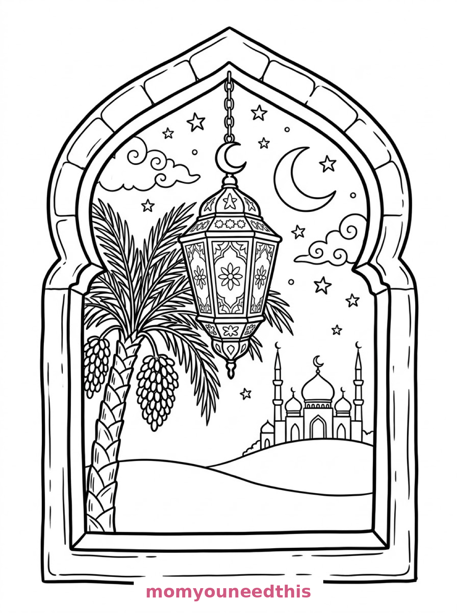
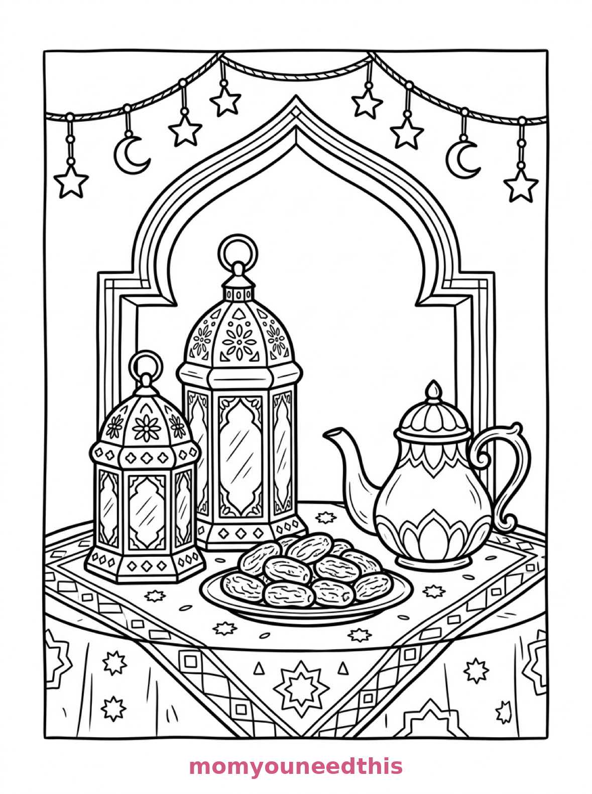
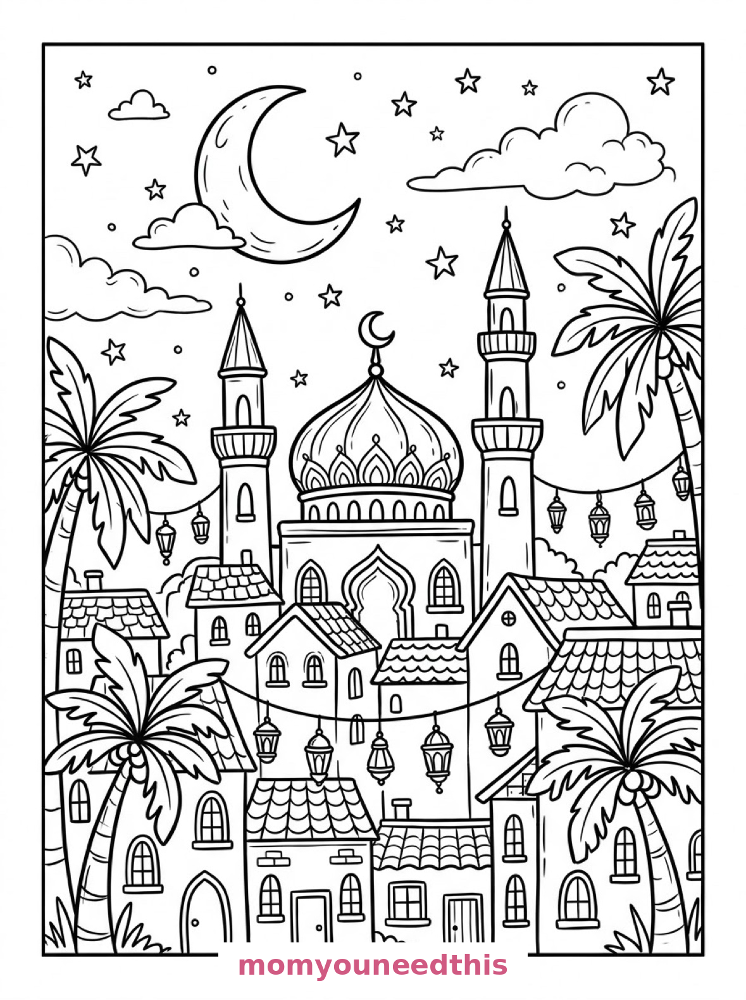

Free Ramadan Coloring Pages Lantern, Iftar Table & Night Town Printables
These free ramadan coloring pages glow with the month's favorite sights — an ornate lantern hanging in an arched window, a still life of lanterns, dates and a teapot, and a whole town under a crescent moon. Download the set below, print at home on letter-size paper, and let the coloring fun begin. No signup needed.
Last updated: October 23, 2026
Quick Answer
Yes — this page has three free printable ramadan coloring pages: an ornate lantern with a crescent finial hanging in an arched window with a mosque beyond, a still life of two lanterns with dates and a teapot under star-and-crescent garlands, and a night town scene with a mosque, minarets and lanterns strung between rooftops. Bold outlines and big spaces, made for little hands. Download, print on letter-size paper, and hand over the crayons — no signup, no cost.
At a Glance
- Ages: 3–8
- Pages: 3 free printables
- Format: Print at home, letter size
- Cost: Free, no signup
- Supplies: Crayons or markers
- Time: 10–20 minutes
🏮 Lantern in the Arched Window Coloring Page

🎨 Download Your Free Ramadan Lantern Coloring Page
An ornate hanging lantern with patterned panels and a crescent finial hangs in an arched window, with a crescent moon and stars beyond, a mosque with domes and two minarets on a hill, and a date palm tree with clustered fruit beside the window — bold outlines, big spaces, zero signup.
⬇️ Download Free Lantern Page 🖨️ Print Lantern Page🎁 Free printable for preschoolers & kids
🌙 Ramadan Still Life with Dates Coloring Page

🎨 Download Your Free Ramadan Still Life Coloring Page
A still life of Ramadan objects on a patterned tablecloth: two decorative lanterns of different heights with geometric cut-out designs, a plate piled with dates, a rounded teapot with a curved spout, and a string of star-and-crescent ornaments draped above an arched niche — bold outlines, big spaces, zero signup.
⬇️ Download Free Still Life Page 🖨️ Print Still Life Page🎁 Free printable for preschoolers & kids
🕌 Town Under the Crescent Moon Coloring Page

🎨 Download Your Free Ramadan Town Coloring Page
A night scene of a storybook town with a mosque at its centre, its dome topped with a crescent finial and minarets rising on both sides, rows of houses with arched windows below, lanterns strung between the rooftops, a large crescent moon overhead and palm trees framing the street — bold outlines, big spaces, zero signup.
⬇️ Download Free Town Night Page 🖨️ Print Town Night Page🎁 Free printable for preschoolers & kids
More Coloring Pages
Tap any picture to open its theme page and download the free printable.


🌙 How To Use This Page
- Browse the three designs and pick the Ramadan scene your child will love most.
- Tap download or print under that design — the file opens full-size, ready for letter-size paper.
- Print a couple of copies of the town scene — it makes a beautiful Ramadan decoration for a window or wall.
- Color together with crayons or markers, ideally in the evening when the lanterns come out.
🏮 Why Kids Love Ramadan Coloring Pages
Ramadan nights are made of the things kids love to color: glowing lanterns, crescent moons, stars, special food, and a whole town awake after dark. These three pages gather all of it — the lantern in the window, the table set with dates and tea, and the rooftops strung with lights under one big moon.
They are also a gentle way for every child to learn the month's symbols. The lantern (fanous), the crescent, the dates that break the fast — each one sits inside a scene, so the meaning arrives with the picture, no lecture attached.
🌙 Meet the Three Ramadan Scenes on This Page
The lantern in the window. An ornate hanging lantern with patterned glass panels and a crescent finial suspended from an arched window frame, a crescent moon and stars in the night sky beyond the arch, a mosque with domes and two slender minarets silhouetted on a hill in the background, and a date palm tree with clustered fruit beside the window. It is the most iconic page in the set — one lantern, one moon, one quiet night.
The still life. A still life of Ramadan objects on a patterned tablecloth: two decorative lanterns of different heights with geometric cut-out designs, a plate piled with dates, a rounded teapot with a curved spout, and a string of star-and-crescent ornaments draped above them against a wall with an arched niche. It is the calmest page in the set — the table set and waiting, ready for sunset.
The town at night. A night scene of a storybook town with a mosque at its centre, its dome topped with a crescent finial and minarets rising on both sides, rows of houses with arched windows below, lanterns strung on lines between the rooftops, a large crescent moon and scattered stars filling the sky, and palm trees framing the street in the foreground. It is the biggest page in the set — a whole town celebrating the night.
✏️ Ramadan Coloring Tips
- Make the lanterns glow. Golds, ambers and warm yellows inside the lantern panels, with a deep blue night around them, is the whole Ramadan palette in one move.
- Pattern the lantern panels. The lanterns have geometric cut-out designs — alternating two colors panel by panel makes them look carved and lit.
- Deep sky, bright town. On the town page, a dark blue or purple sky makes the strung lanterns and the crescent moon shine like real lights.
- Rich browns for the dates. The plate of dates takes the deepest, warmest browns you have.
🌙 Coloring Pages for Different Ages
For ages 3 to 4, start with the lantern in the window. One big lantern and a crescent moon are all a little colorer needs.
For ages 5 to 6, the still life is the sweet spot. Two lanterns, a teapot and a plate of dates give clear, satisfying shapes with patterns to practice on the cloth.
For ages 7 to 8, hand over the town at night. The mosque, the minarets, the strung lanterns and the palm trees reward slow, detailed coloring — the finished scene makes a genuine Ramadan poster.
🏮 More Ramadan Fun After Coloring
Hang the town scene as a Ramadan decoration: taped in a window, the crescent and lanterns greet everyone who passes. Print a second copy for a grandparent or a neighbor — Ramadan coloring pages make especially thoughtful gifts from small hands.
When the month ends, the celebration continues on the Eid coloring pages. And for more calm, patterned scenes in the same gentle style, the aesthetic coloring pages are a quiet companion set.
🔗 More Free Printables You’ll Love
- Free Eid Coloring Pages Eid scenes to print and color for the celebration at Ramadan's end.
- Free Aesthetic Coloring Pages Calm, pretty scenes: a cottage window, a tea still life, a garden bench.
- Free House Coloring Pages Houses to print and color, with bold outlines and big spaces.
- All Free Coloring Pages Browse every free coloring page on the site, organized by theme.
❓ Ramadan Coloring Pages FAQ
Are these ramadan coloring pages really free?
Yes — all three designs on this page are free original printables from MomYouNeedThis. Download them, print them at home, and color — no signup and no cost.
What ages are these coloring pages best for?
Kids ages 3 to 8 get the most from this set. The lantern in the window is the gentlest start for younger children, while the still life and night town scenes have the detail older kids enjoy.
How do I print a coloring page?
Tap the download button under the design you want, then print the file on regular letter-size paper. The print button opens the full-size page in a new tab if you prefer to print from there.
What is the lantern on these pages called?
A fanous — the decorative lantern traditionally lit during Ramadan. The first design shows one large fanous hanging in an arched window; the still life page has two smaller ones beside a plate of dates and a teapot.
Can I make a Ramadan coloring book from these pages?
Yes — print all three designs, stack them in order, and staple along the left edge. Add a cover sheet with your child's name for a finished homemade Ramadan coloring book.